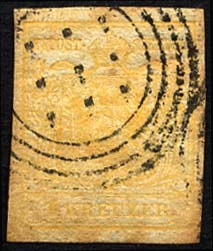
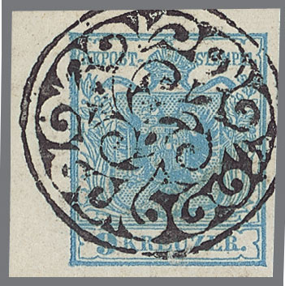
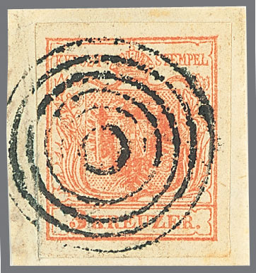
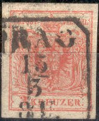
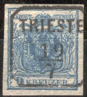
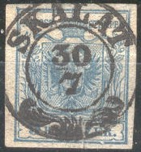
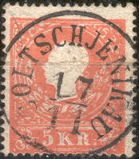
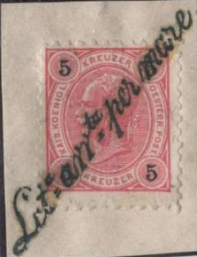

{kind=link}


Vienna 4-ring cancel with dots in the center
Return To Catalogue - Austria overview
Note: on my website many of the
pictures can not be seen! They are of course present in the
catalogue;
contact me if you want to purchase the catalogue.
A few examples of the many postmarks that can be found on Austrian stamps:
Mute cancels ('Stumme-Stempel' in German, others exist):

Vienna 4-ring cancel with dots in the center

Vienna grid cancel

(Krakau mute cancel; circle with mute cancel)
Cancel of Venice 'V.' in three concentric rings

Bielitz cancel

Budweis cancel.

Czimelitz cancel.

Jaegerndorf cancel.


Nagy Banya cancel and Pesth cancel.

Batzau (Patzau?) cancel
Other mute cancels exist of other towns, see for example: http://www.helsinki.fi/~korhonen/boehm/boehm3p_stumme.html (in German).
I know of the following mute cancels:
Batzau (Patzau?); open circle constiting of 8
parts and one central closed circle
Bielitz; three concentric circles with rays, square with
12 smaller squares in the middle,
Bludenz; parallel lines,
Budweis; circle with dots,
Czimelitz; 6 concentric circles,
Gran; square with 6 x 6 smaller squares,
Jaegerndorf; Flower like cancel,
Krakau; Circle with fancy pattern,
Mezzolombardo; circle constisting of lines,
white disk in the center,
Krelowitz; 3 concentric lines black disk in the
center (two types),
Nagy Banya; cancel similar to the 'Muhlrad'
(millwheel) cancels of Bavaria,
Pesth; millwheel cancel or wheel cancel,
Potschatek; circles,
Pressburg; pattern of concentric circles with
one circle larger, dots in the center,
Tabor; 3 concentric circles with a black disk in
the center (picture can be found on the above mentioned website),
Teschen; circle with arrows pointing inwards,
Vienna (Wien); four concentric circles with dots
in the center (two types, most common mute cancel)
or grid consisting of 6 x 6 small lozenges (see image above),
Wischau; small millwheel cancel,
There also exist some other mute cancels where the town of origin
is unknown.
If anybody possesses images of these cancels, please contact me!
Reprints of the 1 k and 2 k with forged mute cancel of Krelowitz

(A Vienna cancel '1' in 4 concentric rings)

'1576' numeral cancel of Znaim.

(Vienna ray-cancel; Wien Strahlenstempel)
Townname and date ('Lang-Stempel' in German):

Townname and date in square ('Kasten-Stempel' in German):


Two-ring cancel with townname and date and Vienna cancel:

Townname and date in circle
Townname and date with special ornament below:


Hollabrun fancy cancel

'Schrems' in an ellipse
'RECOMMANDIRT' cancel (in red, = 'registered' in english):
Other cancel:

Cancels on later series:

(Another fancy cancel of Hollabrun, reduced size)
Austrian Italy cancel (on 'SOLDI' stamps):

('Imp Reg Vapori' cancel)
Seepost cancels:


An interesting website with more cancels: http://berg.heim.at/kaprun/430320/01-Lehr/06/02/OT.htm
{kind=link}
{kind=link}